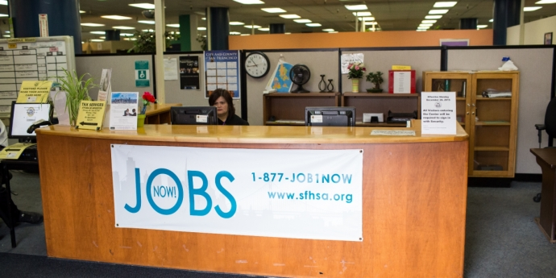
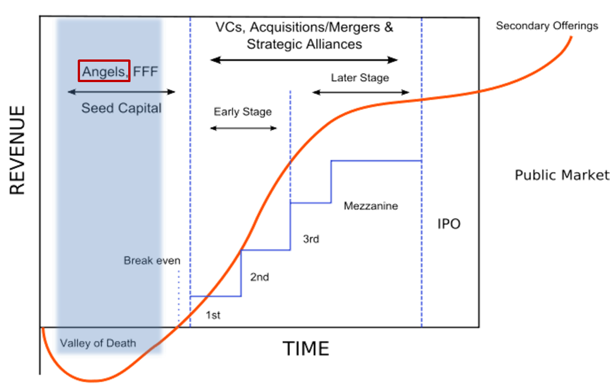
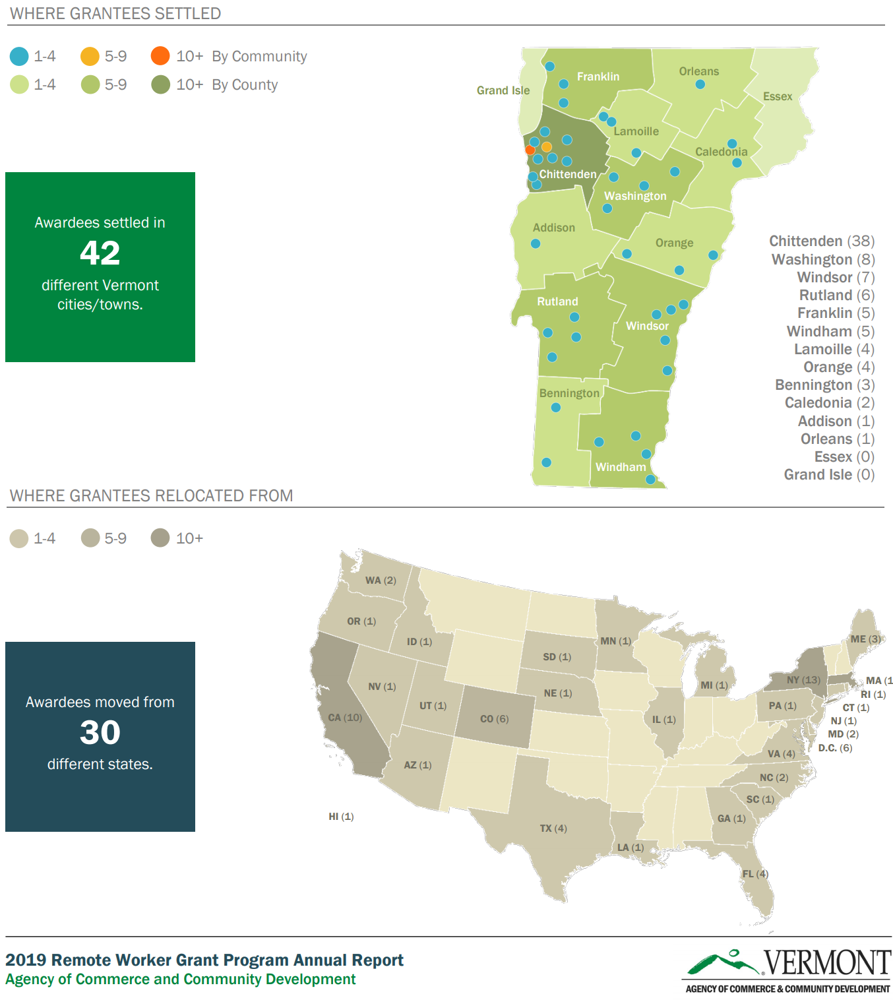

3.4 Local Jobs
This domain includes strategies with the outcome of increasing the number of jobs based in Stockton. This is distinct from the previous section because local job creation may be attracting companies and workers who aren’t necessarily Stockton residents, so as to increase the jobs to employed residents ratio.
3.4.1 Offer job creation tax credit

Source: Brookings
| Location | Philadelphia, PA |
|---|---|
| Details | Philadelphia’s Job Creation Tax Credit rewards businesses that increase the number of jobs available in the City. A business firm can apply this credit to its Business Income and Receipts Tax (BIRT) liability if it either creates 25 new jobs or increases its number of employees by at least 20% within five years of the designated start date. Program participants must commit to maintaining business operations in the City of Philadelphia for five years. The credit amount for jobs created is 2% of annual wages paid for each new job or $5,000 per new job created, whichever is higher, subject to the maximum amount specified in the commitment agreement. |
| Links | City of Philadelphia NCSL |
| Implementation Costs & Impact Factor | Cost depends on the size of tax credit expansion. Estimates suggest that the tax credit creates between 0.13 and 0.3 new jobs at participating firms, primarily for workers 25 and younger. Many of these workers, however, would have been hired without the credit. It is likely that as firm size grows, economies of scale will allow job creation to increase exponentially as the marginal cost of adding an additional employee decreases. |
| Scalable Potential | In California, taxpayers with 20 or fewer employees at the end of the preceding taxable year may qualify for a nonrefundable new jobs credit against the personal income tax and corporation franchise and income taxes for each new qualified employee that is hired. It is equal to $3,000 for each net increase in qualified full-time employees from the previous taxable year. It is only applicable to firms with 20 or fewer employees (see Sec. 23623, California Rev. & Tax. Code). There have been several proposals for implementing a similar system with local corporate taxes. As of 2018, the Stockton-Lodi MSA has 2132 business with other 20 employees, 159,052 employees in those businesses, and payrolls equal to $1,830,930,000. |
| Similar | Columbus, OH |
3.4.2 Encourage mortgage refinancing

Source: DFI
| Location | San Francisco, CA |
|---|---|
| Details | Mortgage refinancing encourages consumers to take out a new loan to take advantage of lower interest rates. This creates a wealth effect whereby they develop greater disposable income. From a Keynesian perspective, this leads to more consumer spending in the local economy. The corollary to this is that growth in aggregate demand leads to job growth, or at least stability. HUD has a class on First-Time Homebuyer Education and Counseling. |
| Links | Regional Heterogeneity and the Refinancing Channel of Monetary Policy Low Interest Rates Boost Household Consumption San Francisco Mayor’s Office of Housing and Community Development |
| Implementation Costs & Impact Factor | N/A |
| Impact Factor | See results for a HUD first-time home buyer program. |
| Scalable Potential | According to Zillow, 1.1% of Stockton homes are delinquent on their mortgages while 6.6% of homes have negative equity. |
| Similar | Dublin, CA Chicago Department of Housing |
3.4.3 Develop public employment program

Source: SFHSA
| Location | San Francisco, CA |
|---|---|
| Details | A public employment program places unemployed, willing-to-work, workers in in-demand jobs across the community. In post-Keynesian thought, the job creation element of a public employment program is two-fold. On one hand, you are giving participants a job. On the other hand, their increase in discretionary income leads to greater aggregate spending and by extension, an increase demand for employment in sectors where money is being spent. Additionally, due to macroeconomic overemployment, it is important to target such a program to those who experience structural unemployment, not frictional. |
| Links | JobsNOW!, San Francisco Human Services Agency General Equilibrium Effects of (Improving) Public Employment Programs: Experimental Evidence Labor Market Considerations for a National Job Guarantee |
| Implementation Costs & Impact Factor | See table. Assuming that there wouldn’t be a resulting increase in labor force participation (unlikely), this could impact about 18,000 individuals. Keep in mind that this would mean exceeding full employment. |
| Scalable Potential | According to CAP data, the ratio of children under 5 to available childcare slots in Stockton is 6.5. This would necessitate growth in the childcare industry. The Old Age Dependency ratio is 20.3, suggesting that the demand for healthcare services will rise in Stockton, even though there is a statewide shortage of healthcare workers. Most theorized public employment programs, particularly those that occur on a federal level, do mention the importance of building/rebuilding infrastructure. |
| Similar | RecycleForce, Indianapolis |
3.4.4 Provide tax credits to investors in advanced industries

Source: PharmExpand
| Location | Nebraska |
|---|---|
| Details | By making these credits refundable, the State of Nebraska Angel Investment Tax Credit has effectively subsidized the angel investment. If a qualified investor makes a qualified investment of $100,000 in a Nebraska start-up company, and receives Nebraska’s 40% angel investment credit, that investor would receive $40,000 in cash (in reduced taxes or direct payment) from the state. |
| Links | Tax Credit Program Report |
| Implementation Costs & Impact Factor | Between 2011 and 2016, Investments: $54,884,750 Investments (#): 614 Investment (mean): $89,389 Credits: $19,156,848 Credits: 614 Credits (mean): $31,200 Note certain businesses received multiple credits. Of the 50 businesses that responded to the follow-up survey, 35 reported that they created new jobs, 12 reported they did not, and 3 did not respond. The average number of new jobs created was 11.5. |
| Scalable Potential | Stockton has over 15,000 businesses with 19 employees or fewer, that employ a total of 55,000 individuals. They are broken down by industry as seen here. |
| Similar | Colorado Advanced Industry Investment Tax Credit |
3.4.5 Provide tax credits to investors in community development corporations

Source: PA Department of Community & Economic Development
| Location | Pennsylvania |
|---|---|
| Details | The program is broken down into four other subparts: The Neighborhood Partnership Program, Special Priorities Program, Charitable Food Program and the Enterprise Zone Tax Credit. Neighborhood organizations must apply to the program by documenting that they have the capacity to complete the proposed project, confirm their collaborations, demonstrate the need for the project and provide required documentation. Eligible projects must serve distressed areas or support neighborhood conservation in a number of focus areas within community development. Any businesses in the state are then eligible to donate to an eligible project and receive up to a 55% tax credit. |
| Links | Neighborhood Assistance Program |
| Implementation Costs & Impact Factor | Thirty-six million in tax credits is budgeted each year for Neighborhood Assistance Program. According to this article, in the Lawrenceville neighborhood of Pittsburgh, NAP helped facilitate 36 new neighborhood businesses in two years, development of 120 new housing units worth $30 million, development of 45,000 square feet of commercial space worth $9 million, and an average $2,900 in real estate tax revenue on previously vacant parcels. |
| Scalable Potential | The Reinvent South Stockton Coalition is an example of a local CDC that can be supported by such a program. |
| Similar | Massachusetts Community Investment Tax Credit |
3.4.6 Pursue public-private partnerships for commercial development

Kia’s 2,200-acre plant in West Point and local suppliers employ 14,000 people, according to the car company. Source: NPR
| Location | Georgia |
|---|---|
| Details | Georgia partnered with Kia to develop a manufacturing plant that suited the needs of the company. No appropriate size plot existed so, Georgia purchased multiple adjacent plots near deepwater ports and leased them to Kia at a low sum. Quick Start, Georgia’s innovative workforce training and development program, developed a specific program just for the needs of Kia. |
| Links | Georgia’s Successful Partnership with Kia Serves as Model for Efficiency and Job Growth |
| Implementation Costs & Impact Factor | $9,000,000-$15,000,000 in Job Tax Credits; $80,700,000 in Department of Transportation capital projects; Direct creation of 3000+ jobs |
| Scalable Potential | Stockton brownfields could be valuable opportunities for large capital projects or commercial development, combining private investment and public facilitation of brownfield remediation. |
| Similar | Prince George’s County Maryland Clean Water Partnership Mission Bay, San Francisco |
3.4.7 Fund economic development using tax-base sharing

Source: North Star Policy Institute
| Location | Montgomery County, OH |
|---|---|
| Details | The Economic Development and Government Equity Program (ED/GE) serves as a tool to make the County more competitive and enhance cooperation among local jurisdictions. The ED/GE program consists of two parts. The “ED” side consists of grant funding generated by sales tax revenue. The “GE” side is a tax-based sharing formula that calculates disbursements based on income and property tax valuations. |
| Links | How Montgomery County ED/GE funding drives economic development |
| Implementation Costs & Impact Factor | $1.8 million in funding over 10 economic development projects in 2018. Since its inception in 1992, the program has assisted in the creation of 24,000 private sector jobs and retained over 30,000 private sector jobs through $2.8 billion in leveraged investment. Impact estimated at 900 new jobs throughout the County. |
| Scalable Potential | A USC study simulating a tax-based sharing program in the Los Angeles region assumed that 40 percent of the growth in local sales tax bases from each local area in the metropolitan area between 2003 and 2013 was allocated to a regional pool. The pool was then distributed back to localities based on their shares of the region’s population. Local sales tax base disparities are so dramatic that even this relatively benign distribution formula would result in increases in the local tax bases of communities serving fully 72 percent of the region’s population. |
| Similar | Twin Cities Fiscal Disparities Program Sacramento AB 680 |
3.4.8 Pay remote workers to move to new location

Source: Vermont Agency of Commerce & Community Development
| Location | Vermont |
|---|---|
| Details | This program offers up to $10,000 a year that can be spent on office supplies, coworking space, relocation, and housing for remote workers to move to Vermont. It also comes with various in-kind benefits. |
| Links | Think Vermont Stay to Stay |
| Implementation Costs & Impact Factor | Between January 1 and September 15, 2019, ACCD awarded $320,834 to 84 new Vermont remote workers. Grants ranged from $400 to $5,000; the average grant awarded was $3,819. As of September 15, 2019, the grant application was downloaded 4,201 times. Grantees brought with them an additional 134 family members (including 44 children), for a total of 218 new Vermonters. The top fields of employment represented by grantees were information technology (31%), management (13%), writing and editing (8%), finance and sales (both tied at 6%), and marketing (5%). Other fields represented included insurance, education, project management, and law. Vermont co-working space memberships were purchased by fourteen grantees and six additional grantees indicated they are considering doing so. Read more here. |
| Scalable Potential | Stockton’s Economic Development Department could develop a similar program to attract remote workers from the Bay Area. Proximity to Silicon Valley may facilitate the networking effects that draw people to the region. Solutions have included investments targeting issues that are unique to Stockton e.g. healthcare access, educational outcomes. There are additional local investments for immigrants on H1B visas. |
| Similar | Montana House Bill 405 Kansas Rural Opportunity Zone Program |